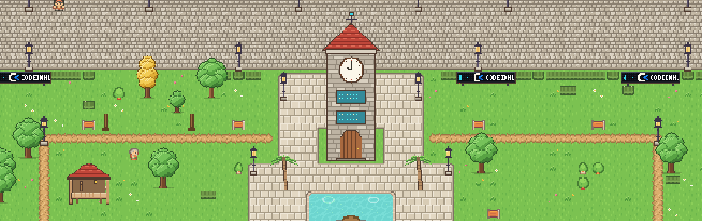

Kamu sedang mengintip kota. Masuk untuk ngobrol, punya rumah, mancing, dan menulis di buku tamu.
codeinhub.my.id

Memuat kota…
Komunitas teknologi Bengkulu
Get in, Learn and Grow with CodeIn
CodeIn City adalah kota virtual tempat anggota CodeIn tinggal, memamerkan proyek, ikut acara, dan saling berkolaborasi.
Intip kota: lihat-lihat dulu tanpa login. Ngobrol, punya rumah, mancing, berkebun, dan buku tamu butuh akun Google (gratis, cukup sekali). Email hanya terlihat oleh admin CodeIn.
Kenali CodeIn
Apa itu CodeIn?
CodeIn adalah komunitas teknologi dari Bengkulu untuk siapa saja yang mau belajar dan berkembang bareng, dari jaringan komputer sampai pemrograman. Mottonya: Get in, Learn and Grow with CodeIn.
Yang kami lakukan
Sharing session dan workshop yang dibawakan anggota, misalnya Sharing Santai Network. Pendaftarannya lewat Papan Pengumuman di kota.
Proyek anggota dipamerkan di Galeri Showcase dan bisa di-hosting di subdomain codeinhub.my.id.
CodeIn News: rangkuman kabar teknologi dan ekonomi, bisa dibaca siapa saja.
Galeri Investasi bersama GIBEI, segera hadir.
CodeIn City
Kota virtual tempat anggota punya rumah dan kebun, mancing, ikut acara, melihat proyek anggota lain, dan ngobrol. Cuacanya mengikuti cuaca asli Kota Bengkulu (data Open-Meteo).
Gabung
Masuk kota dengan akun Google untuk jadi warga, lalu ikuti kabar komunitas di Instagram @codein_community. Kabar teknologi ada di CodeIn News.